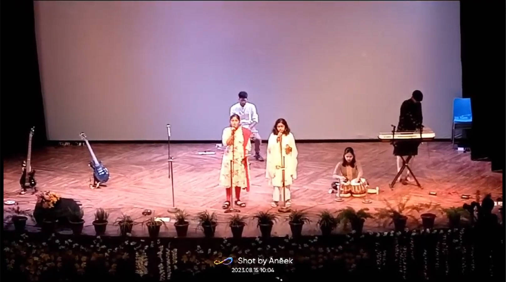

70+
Members
20
Years of vibing together
25+
Performances

Independence Day Performance
15 August 2023
On the joyous occasion of Independence Day, members of the Music Club put together a moving performance in front of an audience over a thousand strong, in the North Campus Auditorium.
View video
View video
Freshers Mixer
by music club | 5 months ago
We performed in front of our newly arrived B.Tech 2027 batch in their introductory event. The mixed emotions, the calm environment and the rainy weather outside (among other factors) really made it a memorable experience for all of us.
A18-1
Farewell Seniors
by music club | 1 year ago
It was a day full of memories and tears as we bid adieu to our seniors - Mayank Jindal, Annirudha Prakash, Nippun, Naveen, Sanjana,
Parshva and Samuel. They were really a guiding light for the members of this club, and we wish them the best of luck in their future endeavours.
Cloud9, Mandi
Cult Meet Performance
by music club | 1 year ago
On the day of the Inter IIT Cult Meet 5.0 hosted by IIT Madras, we brought the best of us onto the stage. Our members performed with impeccable skill, even playing some of their self-composed pieces and solos.
IIT Madras
Meet the Team
Our team are a dynamic group of individuals, each bringing a unique perspective and a shared love
for
the
transformative power of music. From classical enthusiasts to avid rock aficionados, electronic music
lovers to jazz
connoisseurs, our members form a tapestry of musical diversity.
Dr. Srikanth Sugavanam
Faculty Advisor
ssrikanth@iitmandi.ac.in
Our Performances
At our core, we are a team fueled by passion and commitment, dedicated to giving our absolute best
in
every event we
undertake. Our collective drive is not just about achieving success; it's about pushing boundaries,
surpassing expectations, and continuously raising the bar for ourselves. In the face of any
challenge,
we stand ready to give nothing short of our very best.
About Our Club
Welcome to the vibrant music Club of IIT Mandi!
Our music club has been rhythmically moving ahead, achieving new peaks of music excellence. As one of the top-performing clubs within the Cultural Society of IIT Mandi, we are dedicated to infuse melody into the monotonous academic life of the students. Our club is a harmonious blend of talent and passion, fostering a creative space for musicians and music enthusiasts alike. We organizes numerous events, including open mics, musical nights, and more, ensuring that the campus resonates with the sweet sounds of harmony. Join us on this harmonious journey that strives to strike the perfect chord in every IIT Mandi student's heart. So tune yourself with our music!
Our music club has been rhythmically moving ahead, achieving new peaks of music excellence. As one of the top-performing clubs within the Cultural Society of IIT Mandi, we are dedicated to infuse melody into the monotonous academic life of the students. Our club is a harmonious blend of talent and passion, fostering a creative space for musicians and music enthusiasts alike. We organizes numerous events, including open mics, musical nights, and more, ensuring that the campus resonates with the sweet sounds of harmony. Join us on this harmonious journey that strives to strike the perfect chord in every IIT Mandi student's heart. So tune yourself with our music!
About IIT Mandi
Established in 2009, IIT Mandi is one of the newest additions to the prestigious IIT system.
Nestled
in the serene Himalayan
foothills, IIT Mandi offers a vibrant academic environment and state-of-the-art infrastructure.
The
institute is
committed to fostering excellence in education, research, and innovation across various
disciplines
of engineering,
technology, and science. With a focus on interdisciplinary research and a student-centric
approach,
IIT Mandi aims to
produce well-rounded professionals equipped with both technical expertise and a holistic
understanding of societal
challenges. The campus, surrounded by breathtaking landscapes, provides a conducive atmosphere for
intellectual growth
and overall development. IIT Mandi continues to make significant contributions to the field of
education and research,
establishing itself as a dynamic and forward-thinking institution within the IIT fraternity.
Our Achievements
While this looks a bit empty at the moment, we promise we'll have this filled up very soon :)
6th
Secured in the Inter IIT 5.0 Cult Meet held in IIT Madras.
Contact Us
Feel free to reach out to the Music Club!
@musicsociety.iitmandi
musicsociety.iitmandi
Music Club IIT Mandi
musicsociety.iitmandi
Music Club IIT Mandi
Also subscribe to us for notifications on upcoming
events and announcements!
This is entirely dummy at the moment and we don't intend to give you any special treatment should you subscribe.
This is entirely dummy at the moment and we don't intend to give you any special treatment should you subscribe.
Gallery